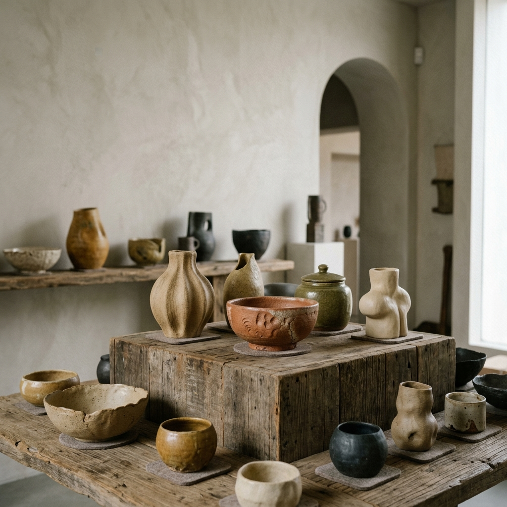
La Biblia de la
Cerámica Fría
El manual definitivo para el artesano moderno.
Arquitectura • Técnica • Estética • Negocio
Aprende a transformar la tierra en arte, sin hornos y con resultados de galería.
Sumario
Índice CompletoI. El Fundamento Espiritual
II. La Técnica Maestra
- 04. Arquitectura de la Tierra 36
- 05. El Código Anti-Grietas 48
- 06. El Ritual del Lijado 60
- 07. Anatomía y Proporción 72
III. Proyectos y Moldes
IV. Estética y Acabados
- 11. Armaduras Internas 120
- 12. Botánica y Alivio 132
- 13. Alquimia de Pátinas 144
- 14. Joyería: Alta Gama 156
- 15. Mesa Funcional 168
V. El Negocio del Arte
- 16. Fotografía de Producto 180
- 17. Branding y Alma 192
- 18. Packaging de Lujo 204
- 19. Precios e Ingeniería 216
- 20. El Estilo Propio 228
VI. Apéndices
© 2026 La Biblia de la Cerámica Fría. Reservados todos los derechos.
Sección I: El Fundamento
01. El Arte de la Pausa Creativa
Bienvenido a una jornada que trasciende el simple acto de modelar. En un mundo donde el ritmo digital parece no detenerse, la cerámica fría (Air Dry Clay) surge como un refugio de presencia y calma. No se trata solo de crear objetos; se trata de permitirte una pausa creativa, un momento de atención plena donde tus manos, conectadas directamente con tu mente, dan forma a algo tangible, único y eterno.
La Psicología del Barro
Trabajar con arcilla activa regiones de nuestro cerebro que el teclado y la pantalla han dejado inactivas. El contacto táctil reduce los niveles de cortisol y nos sumerge en el estado de "Flow" o flujo. Aquí, el tiempo desaparece. Este libro no es solo un manual de técnicas; es una invitación a reclamar tu derecho a la lentitud.
Filosofía Wabi-Sabi en el Siglo XXI
Nuestra estética se basa en el concepto japonés de Wabi-Sabi: encontrar belleza en la imperfección, la impermanencia y lo incompleto. En la cerámica fría, las huellas dactilares no son errores; son la firma de un ser humano en un mundo saturado de perfección industrial. Aprenderás que la simplicidad no es la ausencia de detalle, sino el grado máximo de sofisticación.
Ejercicio de Inicio:
Antes de tocar la arcilla por primera vez, cierra los ojos y siente la temperatura de tus manos. El calor que generas es la primera herramienta de modelado que utilizarás.

Sección I: El Fundamento
02. El Laboratorio de Materiales
Para dominar el arte, debes conocer la ciencia detrás de tu medio. La cerámica fría no es un material monolítico; es una categoría que abarca diversas composiciones químicas que dictan el comportamiento de la pieza durante el modelado y, más importante aún, durante el secado.
1. Arcillas de Base Mineral
Marcas como DAS o Jovi. Compuestas por fibras naturales y minerales. Son pesadas, se sienten como barro real y tienen una contracción moderada (5-8%).
Uso ideal: Jarrones, platos, esculturas robustas.
2. Arcillas Poliméricas/Papel
Marcas como Hearty o Modena. Extremadamente ligeras, casi etéreas. Mantienen cierta flexibilidad tras el secado y permiten detalles filigranados.
Uso ideal: Joyería, miniaturas, flores realistas.
Herramientas: De la Cocina al Taller
No caigas en la trampa de comprar kits costosos al principio. Tu mejor aliado es el ingenio. Una botella de vino vacía es el mejor rodillo del mundo por su peso y superficie lisa. Un palillo de bambú es una herramienta de detalle superior a muchos estiletes de plástico.
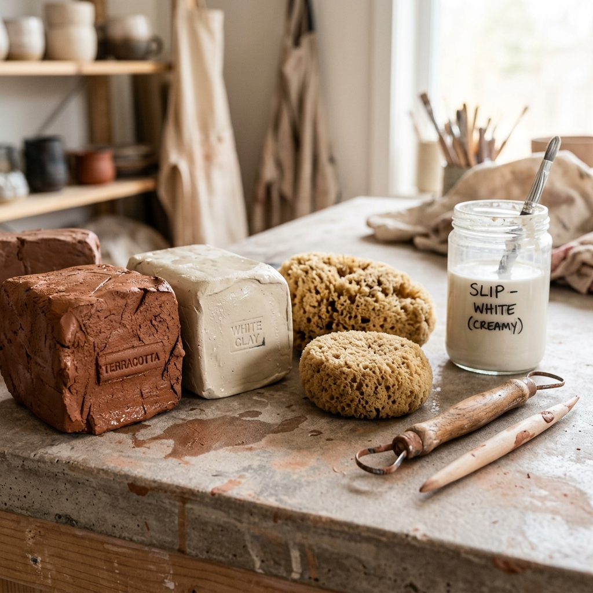
La Tabla de Humedad
El enemigo número uno es el aire. Aprenderás a crear una "estación de hidratación" usando una caja hermética y una esponja húmeda, lo que te permitirá trabajar en una misma pieza durante semanas sin que endurezca.
Lista de Esenciales para tu Primera Pieza:
- ✦ Arcilla blanca de base mineral (500g)
- ✦ Agua destilada (evita moho)
- ✦ Rodillo de vidrio o acrílico
- ✦ Lijas de grano 120, 240 y 400
Sección I: El Fundamento
03. La Ciencia del Modelado
Amasar no es solo mezclar. Es un proceso físico de alineación de partículas. En este capítulo exploramos la física detrás de cada movimiento y cómo la memoria del material afecta el resultado final.
La Memoria de la Arcilla
La arcilla tiene "memoria". Si doblas una placa y luego la enderezas, durante el secado la arcilla intentará volver a su posición doblada. Por eso, cada movimiento debe ser deliberado. Aprenderás a "borrar" la memoria del material mediante el amasado circular lento, permitiendo que las fibras se relajen y se distribuyan uniformemente.
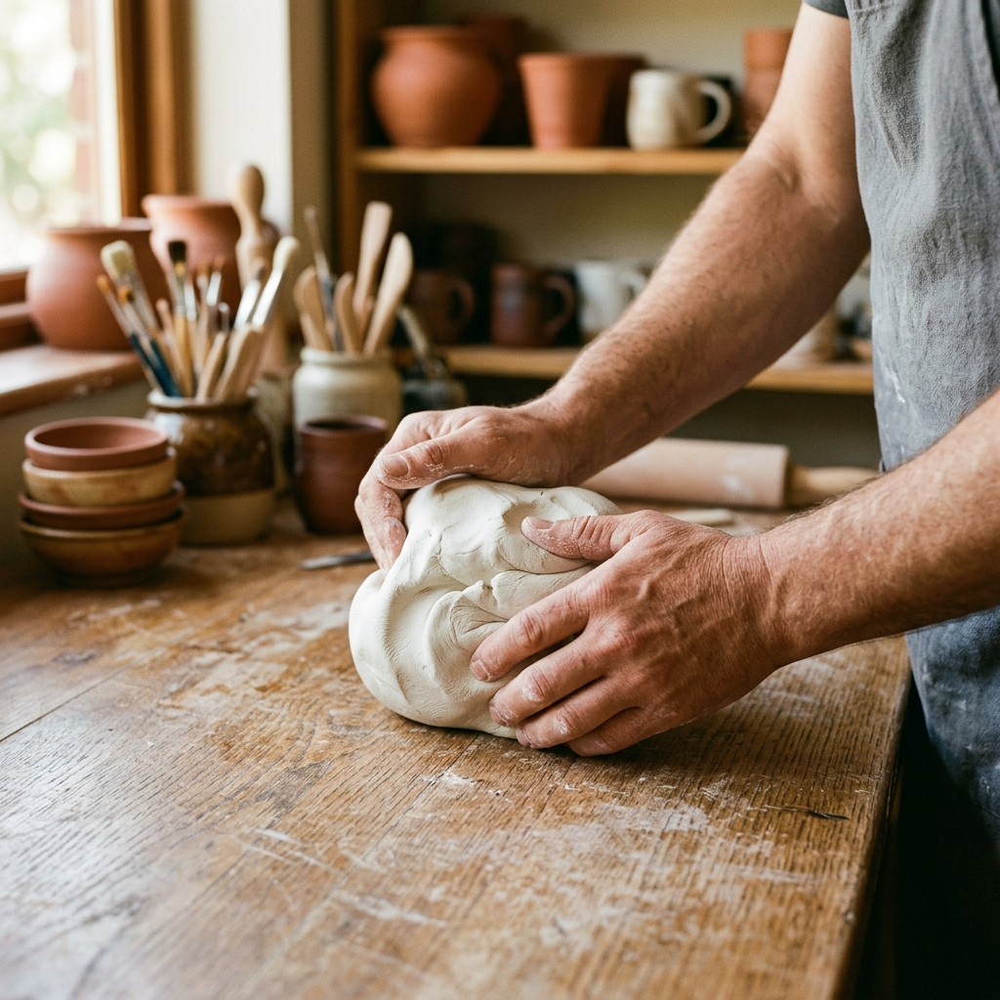
Control de Burbujas: La Técnica del Impacto
Las burbujas de aire son las causantes del 90% de las grietas. Aprenderás la técnica del "Lanzamiento Maestro": golpear la bola de arcilla contra la mesa repetidamente antes de empezar. Esto colapsa las micro-burbujas y crea una masa densa y estructuralmente sana.
La Regla de Oro del Grosor Uniforme
La contracción desigual es el fin de cualquier pieza. Si una parte es más gruesa que otra, secará a ritmos diferentes, creando tensiones internas insoportables. Usaremos guías de madera (listones de 5mm) a los lados de nuestro rodillo para asegurar que cada milímetro de nuestra placa sea idéntico.
Secreto del Maestro:
"Si la arcilla se pega a tus dedos, estás usando demasiada agua. Si se agrieta al doblarla, estás usando muy poca. El punto perfecto es cuando se siente como el lóbulo de tu oreja: suave, flexible y ligeramente fresca."
Sección II: La Técnica
04. Arquitectura en Cerámica
Construir con cerámica fría es un ejercicio de ingeniería. Sin el soporte del calor extremo que funde el sílice en un horno, nuestra estructura depende enteramente de las uniones mecánicas y la cohesión de las fibras.
La Química de la Barbotina (Score & Slip)
Muchos principiantes simplemente presionan dos piezas juntas. Esto es un error fatal. Al secarse, las piezas se separarán limpiamente. La solución es la Barbotina de Alta Cohesión: una mezcla espesa de tu propia arcilla, un poco de agua y una gota de pegamento de carpintero de alta calidad. El rayado (score) debe ser profundo, en ángulos de 45 grados, creando una "llave" física para que el pegamento penetre.
Soportes de "Sacrificio"
Para crear arcos o formas cóncavas, usaremos soportes internos de papel de seda o espuma. Estos materiales se comprimen ligeramente a medida que la arcilla se encoge, evitando que la pieza se agriete desde el interior por culpa de un soporte rígido.
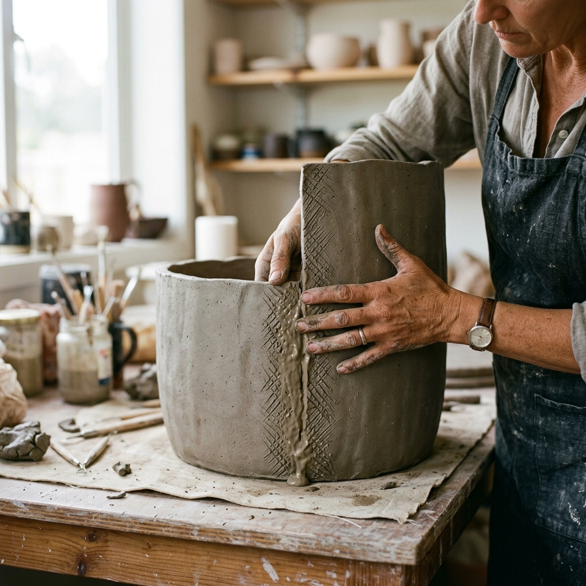
Sección II: La Técnica
05. Manual Anti-Grietas
Este capítulo es, probablemente, el más importante de este libro. El secado es el "momento de la verdad". Una pieza perfecta puede arruinarse en 24 horas por una gestión incorrecta de la evaporación.
La Termodinámica del Secado
La evaporación ocurre primero en los bordes y puntas. Estas áreas se encogen antes que el centro, tirando de la masa húmeda y provocando fracturas. La clave no es secar, sino ralentizar el secado.
El Método de la Carpa (Protocolo Profesional)
-
01.
Coloca la pieza sobre una tabla de madera (nunca plástico o metal). La madera absorbe la humedad de la base, permitiendo un secado 360 grados.
-
02.
Cubre con una bolsa de plástico grande, pero no la cierres. Crea una "carpa" que mantenga un microclima de alta humedad.
-
03.
Cada 12 horas, da la vuelta a la bolsa para eliminar la condensación y permite que entre aire fresco solo durante 5 minutos.
Rescate de Emergencia: La Cirugía de la Arcilla
Si aparece una grieta capilar, no entres en pánico. Aprenderás a preparar el "Filler de Alta Resistencia": polvo de arcilla seca, agua destilada y un poco de vinagre blanco. El vinagre descompone las partículas de la arcilla permitiendo que la nueva mezcla se fusione molecularmente con la antigua.
Checklist de Secado Seguro:
- ✓ Lejos de radiadores o luz solar directa.
- ✓ Sobre superficie porosa (madera o yeso).
- ✓ Girar la pieza 180 grados cada mañana.
- ✓ Paciencia: una pieza grande puede tardar 7 días en secar.
Sección II: La Técnica
06. El Secreto del Lijado Maestro
El lijado no es una tarea de limpieza; es una tarea de modelado final. Es aquí donde la pieza adquiere su carácter "profesional" y pierde cualquier rastro de amateurismo.
La Graduación de la Luz
Debes lijar bajo una luz lateral fuerte. Esto revelará cada pequeña protuberancia o depresión. Comenzaremos con grano 120 para corregir la simetría y terminaremos con grano 400 o incluso 600 para un acabado que brilla naturalmente antes de aplicar cualquier barniz.
Lijado en Seco vs. Húmedo
Aunque la cerámica fría no es resistente al agua, algunas arcillas poliméricas permiten un lijado con apenas una gota de agua para evitar el polvo. Para las de base mineral, el lijado siempre será en seco y con mascarilla de alta protección (N95).
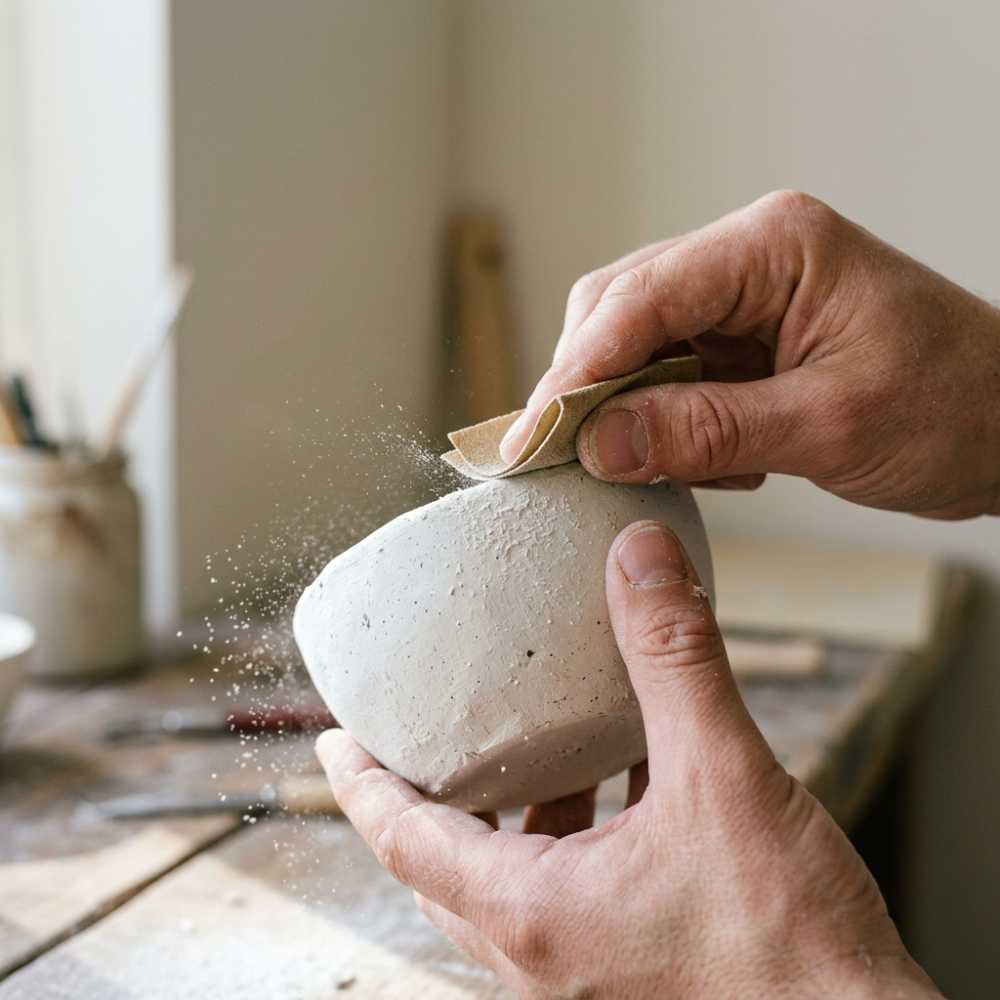
El Truco de la Esponja Mágica
Para las curvas internas donde el papel de lija no llega, usaremos una esponja abrasiva de grano fino. Esto asegura una transición suave en los cuellos de los jarrones y las bases de los cuencos.
Consejo de Seguridad:
El polvo de arcilla es extremadamente fino. Lija siempre en exteriores o usa una aspiradora con filtro HEPA conectada cerca de tu área de trabajo. Tus pulmones te lo agradecerán.
Sección II: La Técnica
07. Galería y Anatomía de Piezas
Un objeto hermoso no es producto del azar; es producto de la proporción. En este capítulo estudiamos las formas clásicas y cómo adaptarlas al diseño contemporáneo.
La Regla de los Tercios en 3D
Al igual que en la fotografía, una pieza cerámica se siente equilibrada si su "punto de mayor tensión" (el área más ancha) se encuentra en el primer tercio superior o inferior, nunca en el centro exacto. Esto crea dinamismo visual.
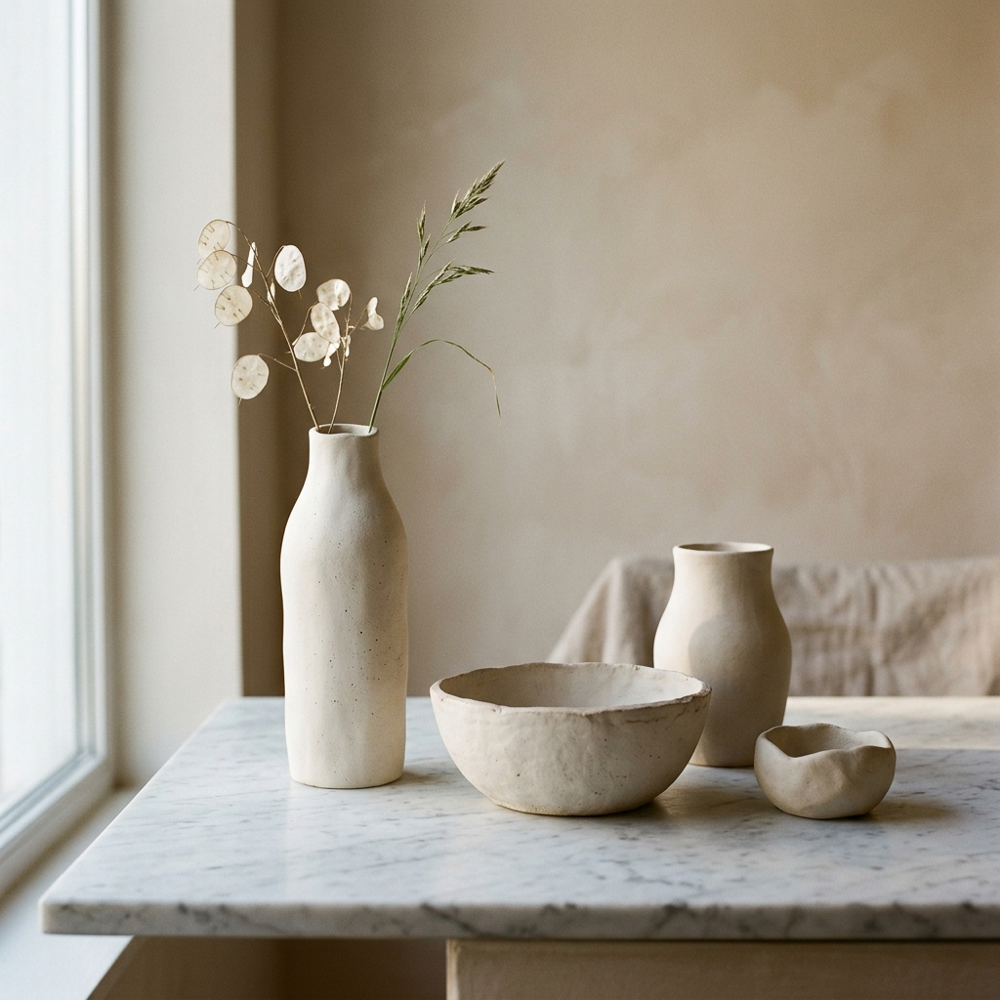
La Base
Debe ser ligeramente cóncava para asegurar estabilidad absoluta en superficies planas.
El Vientre
Donde reside el volumen y el peso visual de la pieza.
El Labio
El acabado final. Un labio fino denota maestría; uno grueso transmite rusticidad.
Simetría vs. Orgánico: Cómo Decidir
Antes de modelar, decide tu intención: ¿quieres una pieza geométrica o orgánica? Para piezas simétricas, usa una plantilla de papel recortada y girala mientras modelas para comprobar cada ángulo. Para piezas orgánicas, cierra los ojos al pellizcar y guíate solo por el tacto. El cerebro visual tiende a corregir; el tacto tiende a crear.
Ejercicio: La Inspección de los 5 Ángulos
Cuando termines cualquier pieza, ponla sobre una mesa y obsérvala desde: frente, atrás, izquierda, derecha y desde arriba. Una pieza profesional es equilibrada desde los cinco ángulos. La mayoría de los principiantes solo trabajan desde el frente. Este ejercicio te entrena para pensar en 360 grados.
Sección III: Proyectos
08. Masterclass: El Altar de Joyas
Este no es un proyecto simple; es una prueba de fuego para todas las habilidades que hemos cultivado hasta ahora. Un Altar de Joyas requiere control de placa, modelado de bordes orgánicos, lijado de precisión y acabado decorativo de lujo.
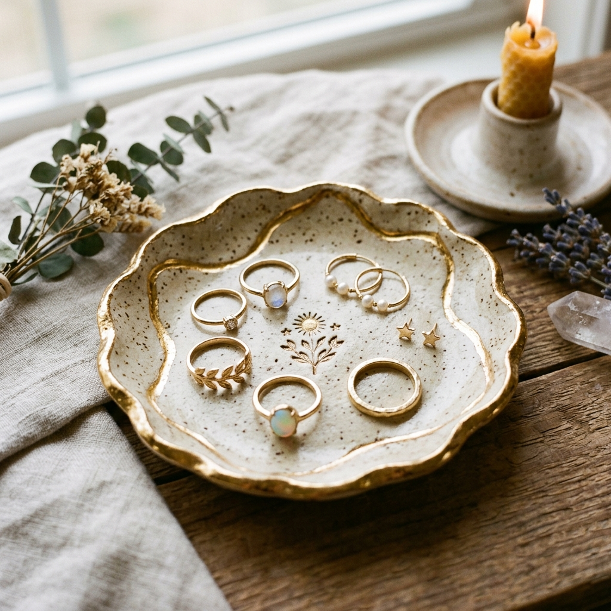
"Este diseño utiliza una base plana con un labio levantado asimétricamente para crear un efecto de hoja cayendo."
Guía de Ejecución Paso a Paso
-
1.
Preparación de la Placa
Estira una placa de 6mm. Usa una tela de lino debajo para transferir una textura sutil de fibra a la arcilla. Deja reposar 15 minutos.
-
2.
Corte y "Desbaste"
Usa una plantilla de papel para cortar una forma ovalada irregular. Usa un dedo humedecido para suavizar el borde recién cortado antes de levantarlo.
-
3.
El Levantamiento Orgánico
Coloca la placa sobre una superficie cóncava suave (un plato de cocina con una toalla encima). Presiona el centro suavemente. Esto forzará a los bordes a levantarse de forma natural.
Acabado Premium: El Borde de Oro
Una vez la pieza esté seca y sellada con barniz mate, aplica una mezcla de polvos de mica dorada y medio acrílico solo en el borde superior. Esto eleva el valor percibido de la pieza instantáneamente.
Sección III: Proyectos
09. Ingeniería de Moldes Caseros
La reproducción es la clave de la escalabilidad. Si quieres vender tus piezas, no puedes modelar cada unidad desde cero si buscas rentabilidad. Los moldes te permiten mantener la consistencia manteniendo el alma artesanal.
Moldes de Escayola vs. Silicona
La escayola es ideal para arcilla mineral porque absorbe la humedad, facilitando el desmolde. La silicona es perfecta para detalles intrincados y piezas pequeñas. Aprenderás a crear moldes de "una sola cara" usando objetos cotidianos como piedras de río, conchas marinas o texturas de corteza de árbol.
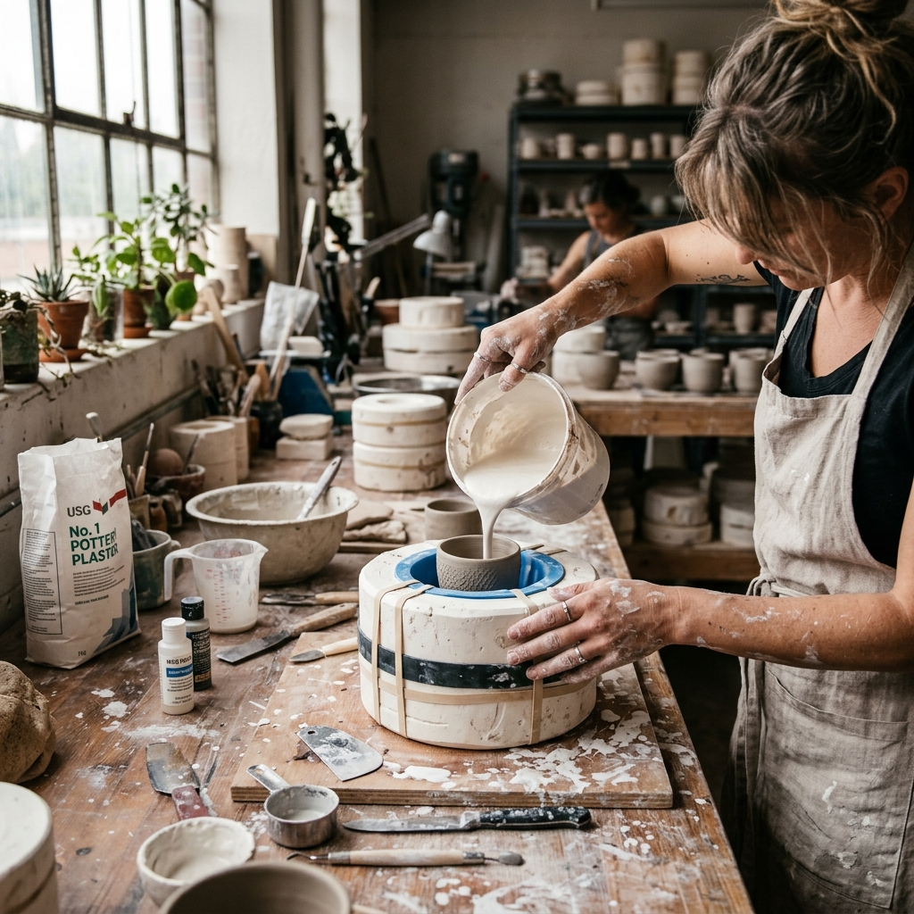
Cómo Crear tu Primer Molde de Escayola
- Elige el objeto a copiar (un cuenco, una piedra, una concha). Unta la superficie con vaselina como desmoldante.
- Mezcla la escayola: 2 partes de escayola por 1 de agua fría. Siempre añade el polvo AL AGUA, nunca al revés. Mezcla sin batir para evitar burbujas.
- Vierte sobre el objeto y espera 30 minutos. La escayola calentará mientras endurece — eso es normal.
- Desmolda con cuidado y deja curar 24 horas antes de usar. Un molde húmedo rompe la arcilla.
- Para usar el molde: extiende una placa de arcilla de 5mm y presiónala dentro. Deja 20 minutos. La escayola absorberá la humedad y la arcilla se despegará sola.
La Técnica del Estampado en 3 Pasos:
- Crea un "sello" modelando un relieve en arcilla y déjalo secar completamente (mínimo 72h).
- Presiona el sello seco sobre una placa fresca de 6mm con presión uniforme y constante durante 10 segundos.
- Retira el sello en un movimiento perpendicular (hacia arriba), nunca en ángulo, para no distorsionar el patrón.
Sección III: Proyectos
10. Inlays y Estética Marmolada
El marmolado es el arte de la imperfección controlada. Inspirado en la técnica japonesa del Nerikomi, utilizamos diferentes colores de arcilla para crear patrones integrados en la estructura misma de la pieza, no solo en la superficie.
Alquimia de Pigmentos
Aprenderás a teñir tu propia arcilla blanca usando óxidos metálicos o tintas acrílicas de alta pigmentación. Un exceso de tinte puede alterar la química del secado, por lo que usaremos proporciones exactas para mantener la integridad estructural.
Técnica del Doblez y Estirado: Paso a Paso
- Prepara dos bloques de arcilla de colores distintos. Cada uno del mismo tamaño (unos 100g).
- Apílalos uno sobre el otro y aplana levemente con la palma.
- 1er doblez: dobla la masa por la mitad y aplana. Las vetas serán anchas.
- 2do y 3er doblez: repite. Las vetas se afinan y se multiplican.
- Detente aquí para un efecto mármol clásico. Si continúas más de 6 dobleces, los colores se mezclarán y obtendrás un tono sucio.
- Estira la masa con el rodillo hasta tu grosor deseado. Las vetas aparecerán en toda su belleza.
Inlays: Incrustaciones de Color
Para crear un inlay (incrustación), modela pequeñas formas (círculos, líneas, hojas) en arcilla de color contrastante. Presiónala sobre la placa principal húmeda hasta que quede al mismo nivel que la superficie. Una vez seco, lija suavemente para revelar el patrón perfectamente integrado. El lijado es lo que hace que el inlay parezca parte del material y no algo pegado encima.
Sección IV: Acabados
11. Estructuras con Armaduras Internas
Para piezas que desafían la gravedad (brazos delgados, cuellos largos, figuras altas), la arcilla por sí sola fallará. Necesitamos un esqueleto que soporte la carga mientras el material está húmedo y que le proporcione resistencia una vez seco.
Cómo Armar el Esqueleto: Paso a Paso
- Dobla el alambre de aluminio (grosor 2mm) siguiendo la silueta de tu pieza. Usa alicates para ángulos precisos.
- Recubre con cinta de carrocero toda la armadura. Esto crea agarre para la arcilla y actúa como zona de alivio cuando el barro se encoge.
- Aplica arcilla en capas finas (máximo 1cm por capa). No intentes cubrir todo de una vez — el peso deformará la pieza.
- Deja reposar 2h entre capas. La capa exterior debe estar en estado "cuero" (no húmeda, no seca) antes de añadir la siguiente.
- Articula los puntos de unión dejando un pequeño espacio de arcilla sin comprimir cerca de las juntas del alambre. Esto absorbe la tensión de la contracción.
Peligro: El Efecto "Espada"
Si usas alambre demasiado rígido (ej: galvanizado grueso) sin acolchado, al encogerse la arcilla el alambre perforará la superficie desde dentro. Siempre recubre el alambre y deja holgura en las articulaciones.
Sección IV: Acabados
12. Pintura Botánica y Relieves
La naturaleza es la mejor diseñadora. En este capítulo, aprendemos a transferir la complejidad de la flora directamente a nuestras piezas, creando un vínculo eterno entre la tierra modelada y la vida orgánica.
Estampado Botánico: Técnica Paso a Paso
- Escoge hojas frescas con venas marcadas: helecho, eucalipto, salvia o hoja de higuera. Sécalas ligeramente con papel absorbente — deben estar blandas pero sin exceso de humedad.
- Extiende tu placa de 6mm sobre una tela de lino. La textura del lino añade un fondo sutil muy elegante.
- Coloca la hoja con el lado de las venas hacia abajo sobre la arcilla fresca.
- Pasa el rodillo con presión firme y uniforme una sola vez. No repitas — el segundo paso borrará el detalle.
- Retira la hoja en un movimiento rápido y perpendicular, como si pegaras una curita. Lento distorsiona; rápido preserva.
- Deja secar 24h antes de cualquier acabado. El relieve se acentúa al secar.
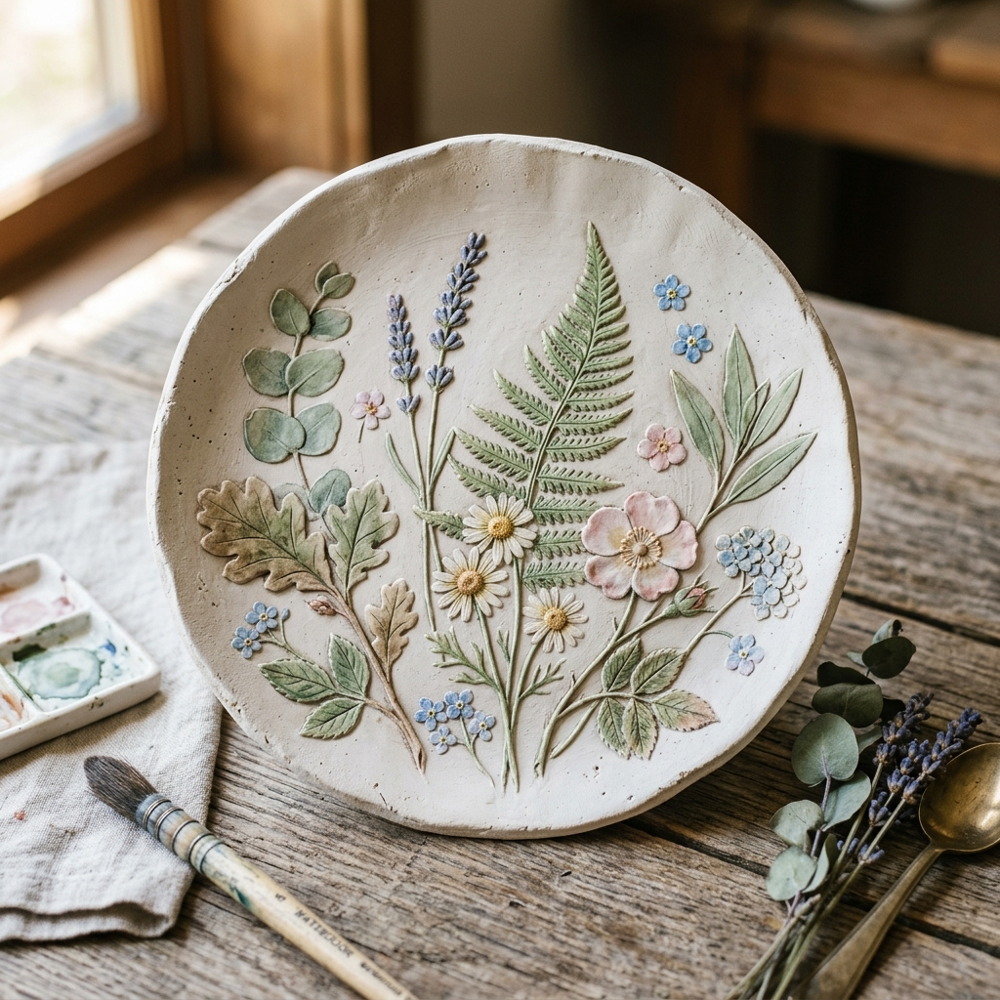
Glaseado en Frío con Acuarelas
Aplica primero una capa de barniz mate y deja secar 1h. Luego mezcla acuarela verde oliva muy diluida (80% agua, 20% pintura) y aplícala con pincel ancho sobre el relieve. La acuarela se acumulará naturalmente en las depresiones de las venas. Limpia el exceso de las zonas planas con un trapo seco. El resultado simula musgo real creciendo sobre cerámica antigua.
Sección IV: Acabados
13. Alquimia de Pátinas Antiguas
¿Cómo lograr que una pieza terminada ayer parezca que ha estado enterrada durante mil años? La respuesta está en la alquimia de las pátinas. No pintamos; aplicamos capas de historia simulada.
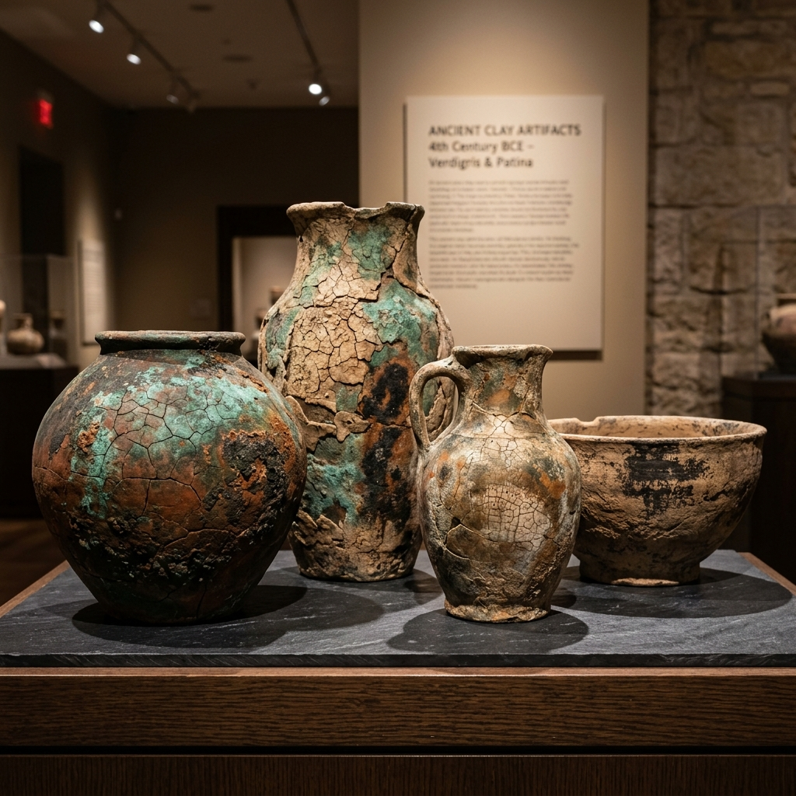
Técnica Wipe-Away con Betún de Judea
- Sella la pieza con barniz acrílico mate. Sin sellado, el Betún la mancha de forma permanente.
- Aplica el Betún de Judea con un pincel viejo en toda la superficie, sin dejar zonas sin cubrir.
- Espera 3–5 minutos (no más). El Betún debe estar pegajoso pero no completamente seco.
- Retira con un trapo de algodón limpio en movimientos circulares. El pigmento quedará solo en grietas y depresiones.
- Para más dramatismo, repite el proceso solo en las zonas de relieve.
- Sella con barniz final (mate o satinado) para fijar la pátina y protegerla.
Efecto Bronce Oxidado (Verdigrís)
- Pinta toda la pieza con pintura acrílica negra. Deja secar.
- Aplica pintura metálica de cobre en seco con una esponja, solo tocando las partes altas del relieve.
- Mezcla vinagre blanco con sal y aplica con un pincel fino sobre las zonas de cobre.
- Deja actuar 12h. La reacción química crea un verde azulado real sobre el cobre.
Sección IV: Acabados
14. Joyería: Aretes y Collares de Alta Gama
La joyería es el punto donde la cerámica se convierte en moda. Debido a su ligereza, la cerámica fría es superior a la arcilla polimérica para aretes de gran tamaño que no cansan el lóbulo de la oreja.
Cómo Incrustar Herrajes: Paso a Paso
- Modela la forma del arete con arcilla de base polimérica de mínimo 3mm de grosor en el centro.
- Con la arcilla fresca, presiona el poste del arete (acero quirúrgico o plata 925) desde la parte trasera, perpendicular, hasta 2/3 del grosor total.
- Aplica una gota de cianoacrilato gel alrededor del poste en la parte trasera. Espera 30 minutos antes de mover la pieza.
- Seca 48h en horizontal con el poste apuntando hacia arriba para evitar que se incline al secarse.
- Lija los bordes hasta grano 400. Los bordes afilados incomodan al usar el arete.
- Sella con resina UV: aplica una capa fina y cura con lámpara UV 60 segundos. La pieza quedará impermeable al sudor y perfumes.
Proporciones para aretes de impacto sin peso:
Aretes tipo "statement" de hasta 6cm no cansan si pesan menos de 4g. Usa arcilla polimérica y haz el centro hueco cuando el diámetro supere 4cm.
Sellado de Alta Resistencia
La joyería está expuesta al sudor, perfumes y cosméticos. Usaremos resina UV de grado joyero o barnices de poliuretano bi-componente para asegurar que la pieza sea impermeable y eterna.
Sección IV: Acabados
15. Decoración de Mesa Funcional
La mesa es el escenario donde tus piezas cobran vida. Aunque la cerámica fría no es apta para lavavajillas ni para contacto directo con alimentos líquidos calientes, su potencial decorativo en el comedor es inmenso.
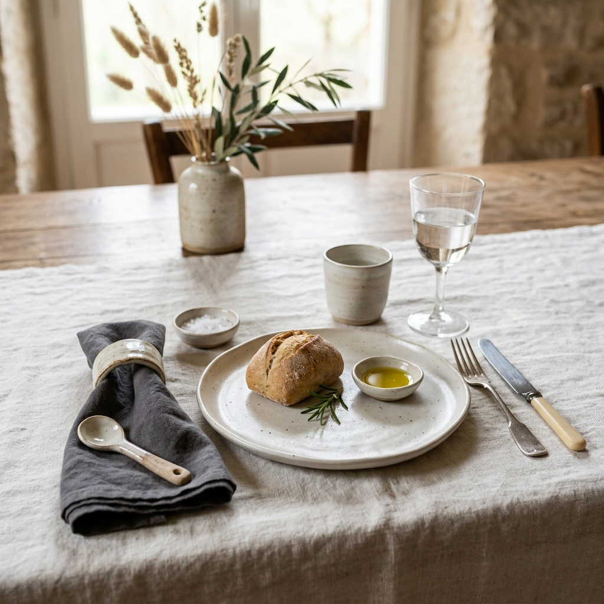
Crea tu Set de Mesa en 5 Piezas Coherentes
Un set se vende por mucho más que piezas sueltas. Usa la misma arcilla y textura para todas:
- 01.Servilletero: Placa de 4mm enrollada en tubo. Diámetro interno 4cm. Textura de lino exterior.
- 02.Porta-nombre: Placa pequeña con ranura cortada con cutter. Graba el nombre con palillo o punzón.
- 03.Portavelas votivo: Cilindro con base maciza, altura máx. 6cm. Nunca velas directas — usa vasito de cristal interno.
- 04.Plato de presentación: Placa de 5mm con bordes de 1cm. Diámetro 20cm.
- 05.Cuenco de sales: Técnica de pellizco. Capacidad para 2 cucharadas de sal o especias.
Advertencia de Seguridad (Food Safety)
Nunca uses barnices tóxicos en piezas cerca de la boca. Usa barnices certificados para contacto indirecto con alimentos y limpia siempre a mano con paño húmedo.
Sección V: El Negocio
16. Fotografía Estilo Pinterest
En el mundo digital, tu producto es tu foto. Puedes ser el mejor artesano del mundo, pero si tu fotografía es pobre, tu negocio no despegará. La cámara de tu teléfono es suficiente con la configuración correcta.
Setup Profesional sin Estudio: 7 Pasos
- Encuentra una ventana con luz suave (nunca sol directo). Mejor horario: 8–10am o 4–6pm.
- Crea tu fondo con una tabla de madera clara o papel kraft pegado en la pared.
- Coloca la pieza a 30cm de la ventana, con la ventana a su lado (nunca de frente).
- Usa un cartulón blanco A3 al lado opuesto como reflector. Ilumina sombras sin flash.
- Añade máximo 2 props: ramita seca, granos de café, o una mano humana sosteniendo la pieza.
- Dispara en modo Retrato o apertura f/2.8. El fondo desenfocado dice "premium" instantáneamente.
- Edita solo brillo y contraste en Lightroom Mobile (gratis): brillo +20, luces −10.
Sección V: El Negocio
17. Creación de Marca Personal
Una marca no es un logotipo; es una promesa. Es lo que la gente dice de ti cuando no estás en la habitación.

Construye tu Marca en 6 Pasos Concretos
- Define tu público en 1 línea: ej. "Mujeres de 30–45 años que buscan decoración minimalista y consciente."
- Elige 3 palabras que describan tu estética: ej. "orgánico, sereno, artesanal". Todo tu visual debe comunicar estas palabras.
- Crea una paleta de 4 colores: un principal, un secundario, un acento y un neutro. Úsalos en fotos, etiquetas y web.
- Define tu "Signature Detail": ese elemento único que aparece en todas tus piezas (un borde dorado, textura de lino, forma de gota).
- Elige un nombre memorable (máx. 2 palabras) y verifica que el usuario de Instagram esté disponible.
- Escribe tu bio de Instagram con esta fórmula: [qué haces] + [para quién] + [resultado emocional]. Ej: "Cerámica hecha a mano para hogares que buscan calma."
Sección V: El Negocio
18. Packaging y Envíos Seguros
El "Unboxing" es la única tasa de apertura del 100% que tendrá tu marketing. Es el momento de mayor alegría del cliente y debes aprovecharlo para fidelizarlo de por vida.

Ingeniería de Protección: La Caja Flotante
- Elige una caja que sea 6cm más grande que la pieza en todas las dimensiones.
- Arruga papel kraft hasta tener bolas sueltas. No uses plástico de burbujas — el papel amortigua mejor los golpes de baja frecuencia.
- Crea una cama de 3cm de papel en el fondo de la caja.
- Envuelve la pieza con papel de seda x2 capas. Nunca plástico directamente sobre la arcilla.
- Rodea la pieza con papel kraft por todos los lados (3cm mínimo).
- Test de la caja cerrada: agítala suavemente. Si escuchas movimiento, añade más relleno. El silencio es señal de seguridad.
El Toque Humano que Fideliza:
Un sello de cera, una ramita de lavanda seca y una nota escrita a mano con el nombre del cliente cuestan menos de €0.50 pero generan reseñas de 5 estrellas y recompras espontáneas.
Sección V: El Negocio
19. Estrategia de Precios y Costos
Muchos artesanos fracasan porque no saben cobrar. No estás vendiendo "barro", estás vendiendo "tiempo de vida" y "talento acumulado".
La Ecuación de la Rentabilidad
(Materiales + Gastos Fijos + Tu Valor Hora) × 1.5 = Precio Mayorista
Precio Mayorista × 2 = PVP al Público
Cómo Calcular tu Precio Paso a Paso
- Pesa la arcilla usada por pieza y calcula el costo: si el paquete de 500g cuesta $8 y usaste 150g, el costo de arcilla es $2.40.
- Suma todos los consumibles: barniz, pigmentos, papel de lija, herrajes. Divide por el número de piezas en las que los usarás.
- Define tu valor hora: comienza con el equivalente al salario mínimo de tu país. Cronometra el tiempo real de cada pieza.
- Añade gastos fijos mensuales (packaging, plataformas, envíos) divididos entre el número de piezas que vendes al mes.
- Aplica la fórmula: (Materiales + Gastos Fijos + Horas × Valor/hora) × 1.5 = Precio Mayorista × 2 = PVP.
- Nunca ajustes tu precio hacia abajo para competir. Ajusta tu presentación hacia arriba para justificar el precio.
Sección V: El Negocio
20. Encontrando tu Estilo Propio
La imitación es el primer paso del aprendizaje, pero la innovación es el único camino hacia el éxito a largo plazo.
Ejercicio: El Moodboard de 3 Mundos
- Reúne 10 fotos de cerámica que admires. Identifica qué tienen en común: formas, texturas, colores.
- Reúne 10 fotos de fuera de la cerámica que te emocionen: arquitectura, moda, naturaleza, pintura.
- Junta los 20 en un tablero (Canva o papel). Busca el elemento visual que aparece en ambos mundos. Ese cruce es tu estilo.
- Traduce ese elemento al barro: si amas las líneas arquitectónicas brutalistas, experimenta con cantos vivos y bordes crudos sin lija.
- Crea 5 piezas seguidas aplicando solo ese elemento. La repetición lo solidifica como sello personal.
Sección VI: Apéndices
21. Cuidado y Mantenimiento
Has creado una pieza con alma; ahora asegura su longevidad. Esto también es información valiosa para dar a tus clientes.
Guía de Cuidados para el Cliente
- ✦Limpieza: Paño de microfibra seco o ligeramente húmedo. Nunca sumergir en agua.
- ✦Ubicación: Lejos de baños y cocinas con vapor. La humedad ambiental acumulada puede debilitar el sellado.
- ✦Mantenimiento anual: Una capa fina de cera de carnauba (la misma que usan para coches) restaura el brillo y refuerza la barrera protectora.
- ✦Exposición solar: La luz UV directa puede amarillear los pigmentos blancos en piezas sin barniz UV.
Reparación Kintsugi Adaptado
- Limpia las superficies rotas con alcohol isopropílico. Deja secar 10 minutos.
- Mezcla resina epoxi de 5 minutos con polvo de mica dorada (1 parte de polvo por 4 de resina).
- Aplica con un palillo fino sobre las fracturas y une las piezas.
- Mantén presión con cinta de carrocero durante 15 minutos.
- Una vez curado (24h), lija suavemente la unión con grano 600 para nivelarla.
- Aplica una línea fina de mica dorada pura con un pincel de punta fina sobre la reparación para el efecto Kintsugi definitivo.
Sección VI: Apéndices
23. Experimentación con Texturas
Aquí las reglas desaparecen. El barro es un lienzo infinito. Prueba estas técnicas de texturizado sobre arcilla fresca:
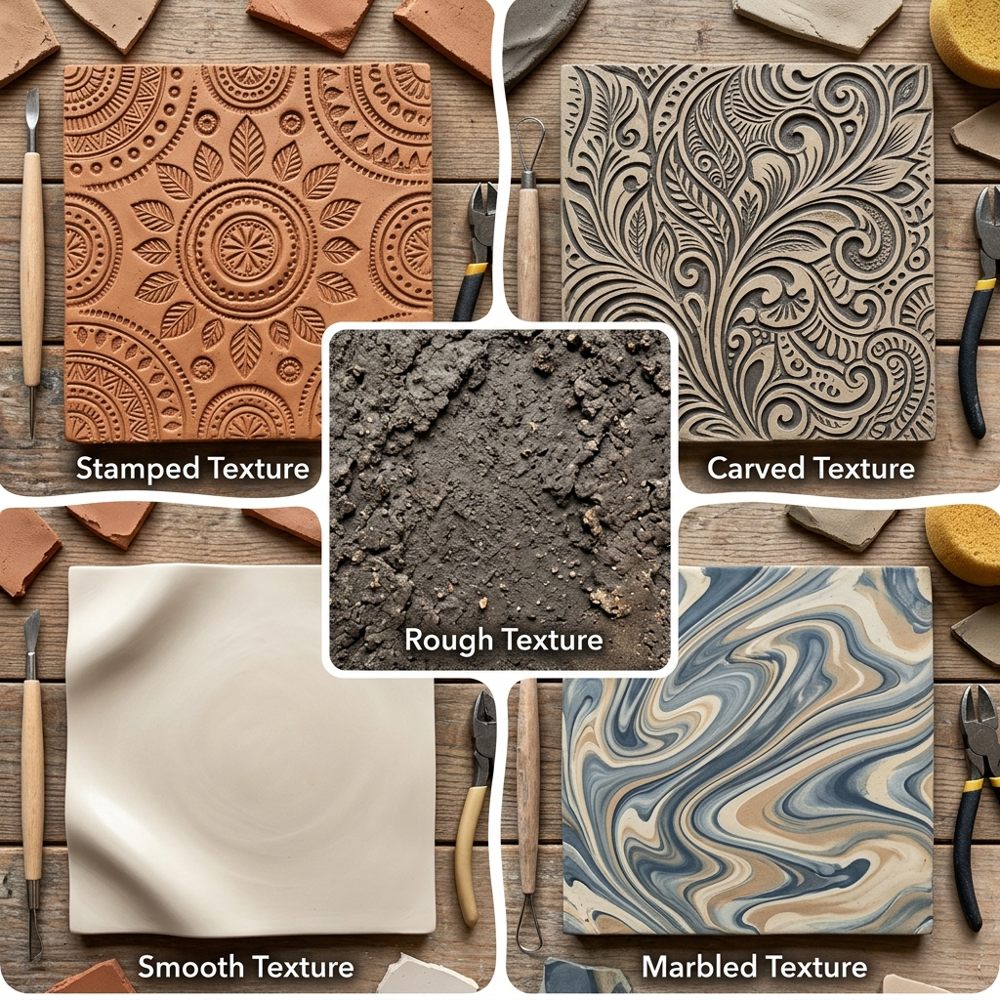
Sal Gruesa
Esparce sal marina gruesa sobre la placa fresca. Presiona levemente. Al secar, retira la sal: quedarán cráteres lunares únicos.
Red de Fruta
Presiona la red de plástico de una bolsa de naranjas sobre la arcilla y pasa el rodillo. Patrón geométrico repetitivo perfecto.
Corteza de Árbol
Prensa directamente un trozo de corteza rugosa. Cada árbol produce un patrón diferente e irrepetible.
Tela de Arpillera
Extiende arcilla directamente sobre arpillera y pasa el rodillo. La tela deja una trama rústica y artesanal en toda la superficie.
El Cierre del Círculo
El Manifiesto del
Artesano Lento
"Creo en las manos que crean lo que la mente imagina, porque en ese acto reside nuestra verdadera humanidad."
"Creo en el valor de lo hecho despacio, con intención y presencia, desafiando la tiranía de lo instantáneo."
"Creo que un objeto con alma tiene el poder de transformar un espacio, un estado de ánimo y una vida."
"Acepto mis grietas, mis huellas dactilares y mi proceso, porque son el testimonio de mi existencia."
Gracias por crear conmigo.
Fin de la Primera Edición